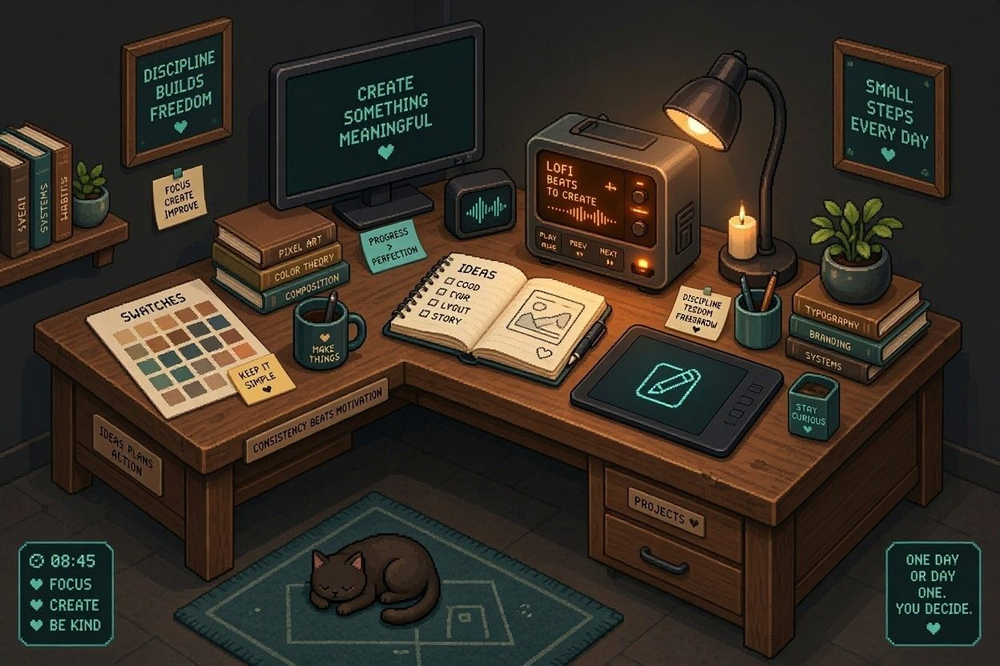

Music player interfaces built as clean HTML, CSS and a little JavaScript. Change the colors, drop in your tracks, ship it.

Tap a swatch. Every kit runs on a handful of CSS variables, so a recolor takes seconds.